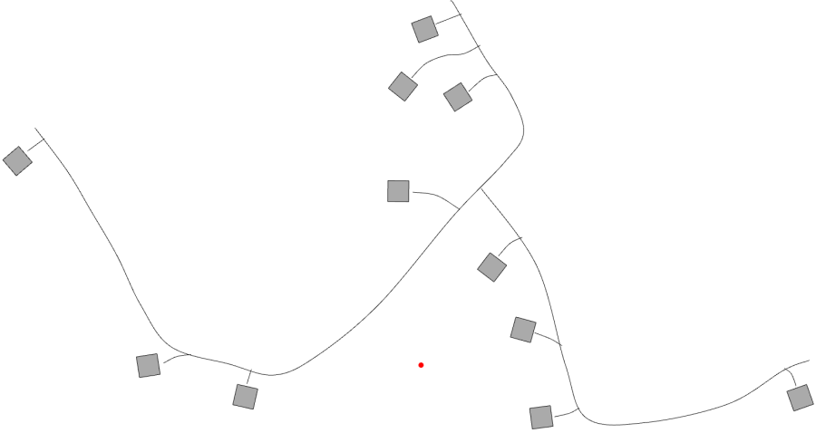

Introduction
I am working on a computer game for people such as Transportation Engineers, Urban Planners, and citizens who want to learn about the design of urban systems such as infrastructure networks.
Process
FIXME: Make an illustration for my process on this one.
Sketching

Prototype 1
FIXME: Put a link to a live version of this prototype. User Testing
Prototype 2
FIXME: Put a link to a live version of this prototype.Sketching
User Research
Written Feedback
- People do not like computational limitations.
- People only want to focus on the details that matter to them.
- People like the ability to rapidly experiment and then undo actions.
- People desire a streamlined, accessible, rich in feedback and fun such as in Rollercoaster Tycoon.
- People don’t like wasting time. They want to see action following from their actions.
- Some people have learned life lessons through playing with simulations, such as learning tradeoffs in Oregon Trail that have influenced their real world hiking behaviors.
- Navy simulations mimicked real life, which allowed people to take real life actions in a situation as if they had prior experience. Something about the immersive and engaging experience can make simulations more memorable than facts and teaching alone.
- People like the ability to make horrendously bad decisions and see what will happen through the safety of a simulation.
- Portability is important. That is why internet simulations may be more accessible than desktop simulations and physical installations.
- Use non-outdated technology, because a great simulation is useless if nobody can use it.
Sketching

Prototype 3
This is a design Prototype. Click here to see a live version of this prototype.